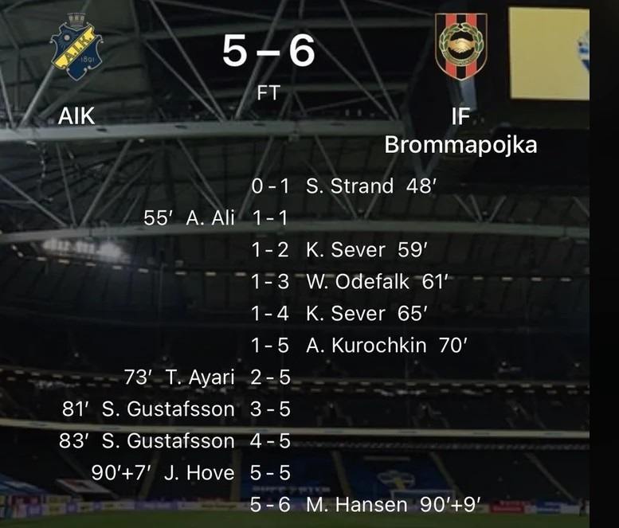
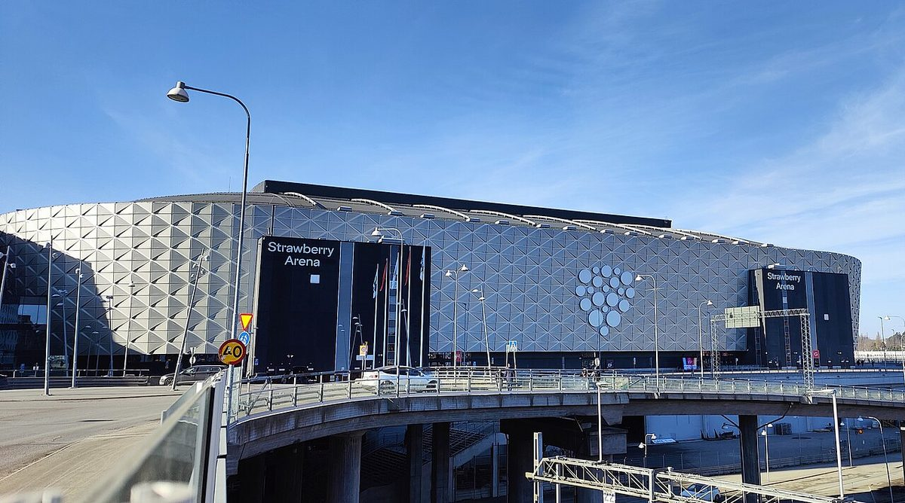

At half-time, this match between two Stockholm clubs was goalless. If you'd gone to get a hot dog and missed the restart, you'd have come back to find it 0–1. Then 1–1. Then, at a rate of almost one goal every three minutes, 1–5. Any AIK fans who joined an exodus to the exits at that point would regret it for the rest of their lives.

Here's what happened next. Brommapojkarna, known to everyone as BP, scored four goals in eleven minutes to lead 5–1 with 70 minutes gone. Lots of teams would collapse at that point. AIK didn't. They pulled one back through Taha Ayari, before Sixten Gustafsson scored twice in two minutes to make it 5–4. And then, in the seventh minute of stoppage time, Johan Hove equalised for AIK. Five–five. The home crowd went wild. Football had produced the most improbable comeback of the season.
Except it hadn't finished. About 90 seconds later, with the last kick of the game, BP's Oliver Zandén ran past his defender and set up Mads Hansen, who scored. Five–six. Pandemonium at one end, total silence at the other.
The scoreline rollercoaster
According to the Swedish Football Association, the eleven second-half goals are the most ever scored in one half of an Allsvenskan match, beating a record of ten that had stood since 1945. It was also reported to be BP's first ever Allsvenskan win over their bigger neighbours. "It's value for money for those who came here today," said BP's Simon Strand, who scored the first goal, speaking to Swedish TV channel TV4. AIK's two-goal Gustafsson was less cheerful: "It's such a shame."

Be honest. It's 70 minutes, your team is losing 1–5, it's cold and the car park will be a nightmare. Do you leave? Anyone who did missed five more goals, a last-minute equaliser and a last-kick winner. That's why the most important rule of going to the football, whether you're at the Strawberry Arena or Allianz Stadium, is simple: stay until the final whistle. You never know.
At 5–5, with seconds left, should AIK have stopped attacking and settled for a draw? Gustafsson didn't think so: "We should always go for three points." He's got a point. But if they'd held on, they'd have a point too. Discuss.